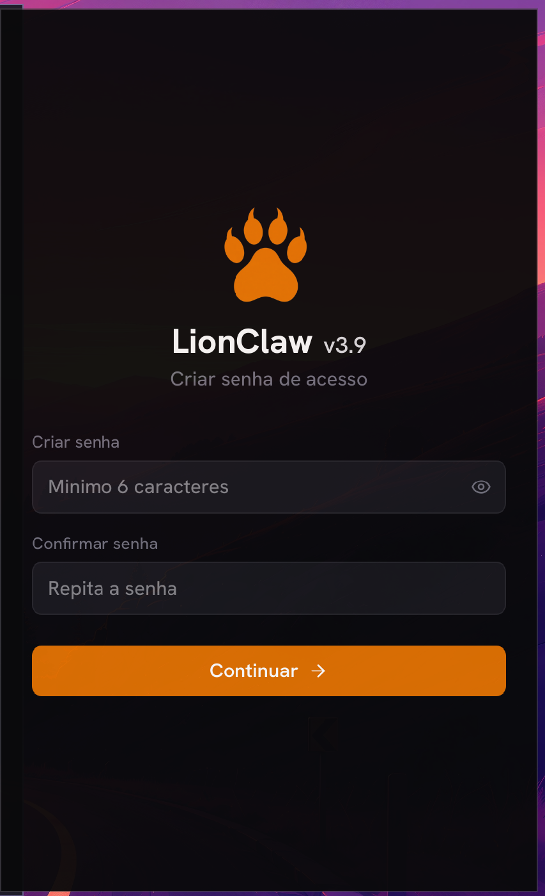
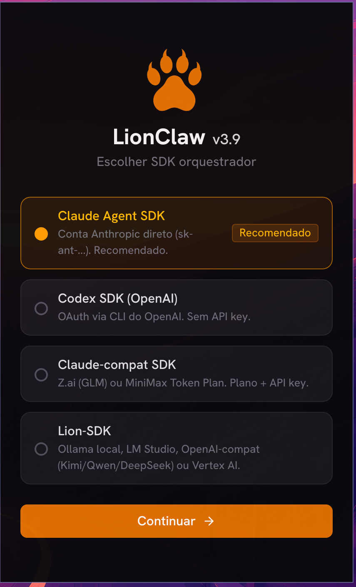
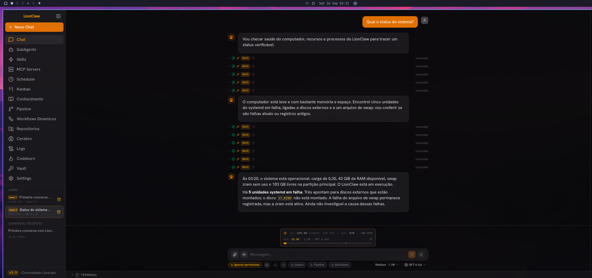
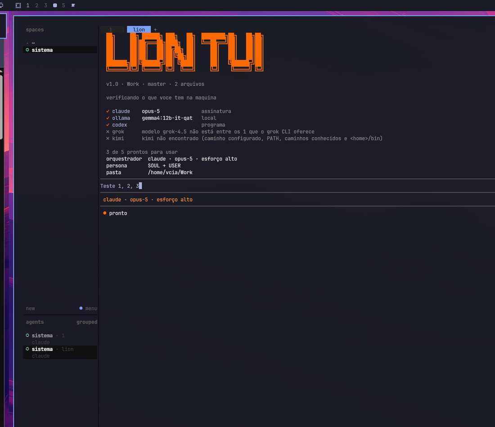

Registro de validação comunitária · 26/09/2026
LionClaw 3.9 no Omarchy: do XWayland ao Wayland nativo
Instalamos o LionClaw Desktop 3.9.0 do zero num Omarchy recém-reinstalado. Por XWayland, a interface abria no dobro do tamanho e o ditado por voz chegava como números. Nativo no Wayland, os dois problemas somem, sem mudar nada no código do LionClaw nem no ditador do sistema.
- LionClaw 3.9.0 ·
b0907f7 - Omarchy 4.0.4 · Hyprland 0.56.2
- Instalador comunitário v1.1.2
- Ditado Voxtype no modo digitar
ANTESPor XWayland: tudo em dobro
Até a 3.8.0, a instalação abria o LionClaw com ELECTRON_OZONE_PLATFORM_HINT=x11, ou seja, pela camada de compatibilidade XWayland. O Omarchy define GDK_SCALE=2 para a sessão inteira, e aplicativos que passam pelo XWayland desenham tudo no dobro do tamanho, mesmo com o monitor em escala 1.


O ditado por voz virava números
O Voxtype, ditador do Omarchy, escreve o texto simulando um teclado. Ele troca o mapa de teclas a cada letra; aplicativos nativos do Wayland acompanham essa troca, mas o XWayland lê as teclas pelo teclado físico e entrega a fileira de números.
121345672153819370-=1
Olá, será que estamos funcionando agora?
Mesma frase, dita do mesmo jeito. Nada muda no Voxtype: ele continua no modo digitar, que é o padrão do sistema e funciona em todos os outros aplicativos. Resultado confirmado pelo operador na estação de validação.
Por que o Wayland nativo não abria antes
No registro da 3.8.0, o modo nativo subia os processos, mas a janela nunca aparecia. O motivo está no próprio LionClaw: no Linux ele desliga a aceleração gráfica e só mostra a janela depois do primeiro desenho completo. No Wayland, sem aceleração, esse momento não chegou e a janela ficou invisível.
O LionClaw já oferece uma chave para religar a aceleração. Com ela, a janela aparece nativa no Wayland:
ELECTRON_OZONE_PLATFORM_HINT=wayland
LIONCLAW_ENABLE_HARDWARE_ACCELERATION=1A chave existe no código oficial desde a v3.0. Validamos a aceleração nesta placa de vídeo; em outras, vale confirmar.
DEPOISNativo no Wayland, aberto pelo menu
Com o instalador v1.1.2, o atalho do menu já abre o LionClaw assim. Tamanho normal, e o app trabalhando: a lane do Codex SDK checou a saúde do computador usando o terminal.

Como instalar ou atualizar
Instalação nova: siga o guia passo a passo ou rode o instalador em modo TUI.
git clone https://github.com/aiob3/lionclaw-omarchy.git
cd lionclaw-omarchy
./install.shJá instalou por uma versão anterior? Atualize o atalho do menu, sem repetir dependências nem build:
git pull --ff-only
./install.sh --step menu --target /data/lionclawAplicou a etapa "Ditado F9" da 1.1.0 ou 1.1.1, que trocava o Voxtype para colar? Ela não é mais necessária. Veja como voltar ao modo digitar na reversão manual.
Duas portas de entrada da comunidade
O LionClaw Desktop é o ambiente completo. O LionTUI é a entrada mais simples: um assistente de terminal que abre por uma tecla, pelo plugin omany, numa aba do Herdr. Os dois compartilham a persona em ~/.lionclaw.
| Tema | LionClaw Desktop | LionTUI pelo omany |
|---|---|---|
| Onde abre | Janela própria, pelo menu | Aba do Herdr, por tecla ou pela barra |
| Instalação | Instalador comunitário: Node fixado, rebuild, build, menu | Clone, build, npm link e mise reshim |
| Credenciais | SDK recomendado pede chave de API da Anthropic (cobrança por uso) | Usa a assinatura do Claude e o login do Codex já presentes |
| Ditado | Funciona nativo no Wayland | Funciona no terminal |
| Para quem | Quem quer subagentes, pipelines, kanban e cofre | Quem está começando e quer uma conversa só |

O que foi e o que não foi validado
| Item | Situação |
|---|---|
| Instalação do zero, rebuild, build | Validado, sem alterar arquivos do repositório oficial |
| SQLite, PTY e keytar no Electron 33.4.11 | Validado |
| Abertura pelo menu, nativo no Wayland | Validado |
| Escala e ditado | Validados pelo operador |
| Outras placas de vídeo | Não validado |
| Instalação numa máquina Omarchy limpa (VM) | Não executado |
Este é um registro de validação comunitária. Não é uma certificação oficial do LionLabs nem do Omarchy, e este projeto não redistribui o aplicativo oficial.